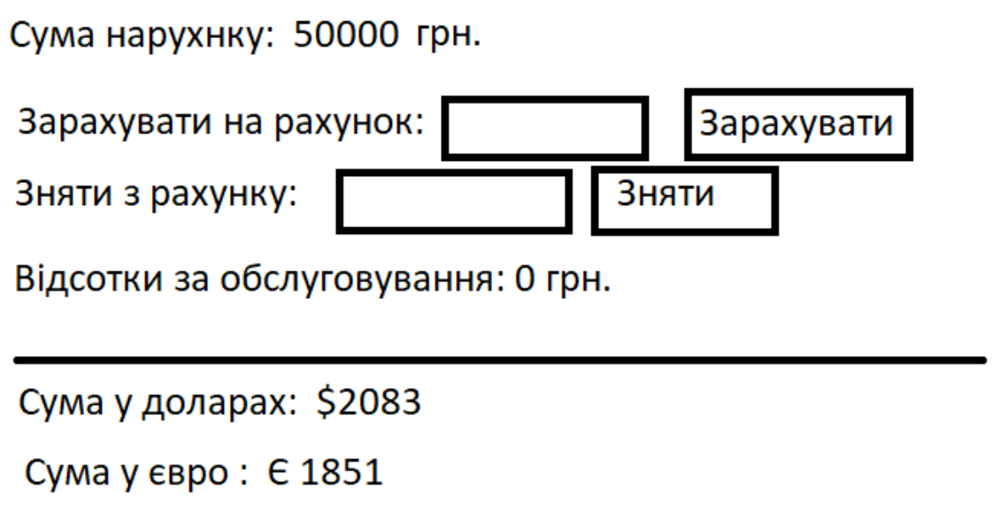
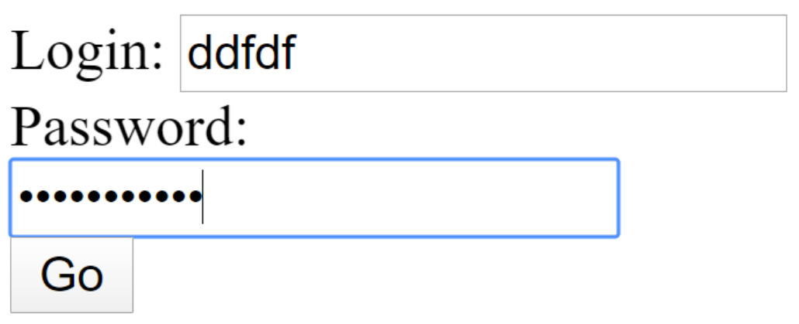

Урок 1
-
Завдання 1
Вводиться кількість пасажирів. Вивести:
- скільки потрібно автобусів (кожен автобус на 20 місць)
- скільки пляшок води (кожному пасажиру 2 пляшки)
- скільки бутербродів (кожному пасажиру 3 бутерброди)
-
Завдання 2
Вводиться номер місяця. Автоматично виводити рекомендований одяг (зима – пальто, літо – шорти ….). Також автоматично виводити зображення з відповідним зображенням лісу (зима – ліс зі снігом, осінь – жовтий ліс, …).
-
Завдання 3
Задано початок та кінець діапазону. При натисканні на кнопку випадковим чином генерувати значення з вказаного діапазону та відображати його.
-
Завдання 4
“Рахунок у банку”
Вимоги:
- Спочатку сума дорівнює 0грн. Змінити суму у гривнях можна або зарахуванням на рахунок, або зняттям.
- Сума автоматично переводиться у долари та євро (фіксований курс задається у data).
- Можливість зарахувати суму (контролювати, щоб не була від’ємною)
- Можливість зняти (щоб не можна зняти більше ніж є на рахунку)
- При виконанні зняття і зарахування коштів вираховувати 3% від суми (відображати кількість відсотків автоматично)
При зміні суми :
- якщо було зняття, то суму відоражати червоним
- якщо було зарахування, то суму відображати зеленим
Якщо сума валюти менша за 100 то відображати червоним кольором, інакше - зеленим
 -
Завдання 5
Додаток містить масив об’єктів (логін, пароль) -- інсуючі логіни і паролі. Користувач вводить логін і пароль, а програма повідомляє чи може користувач бути авторизованим (чи є він одним з масиву).
